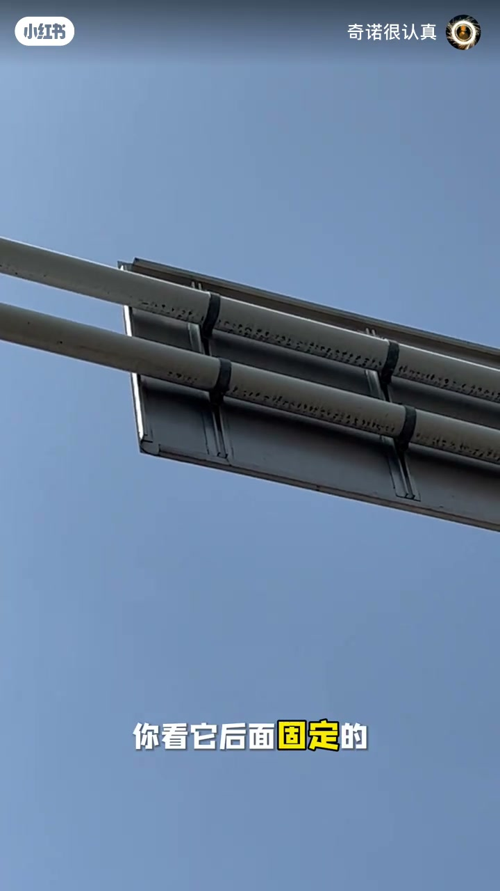
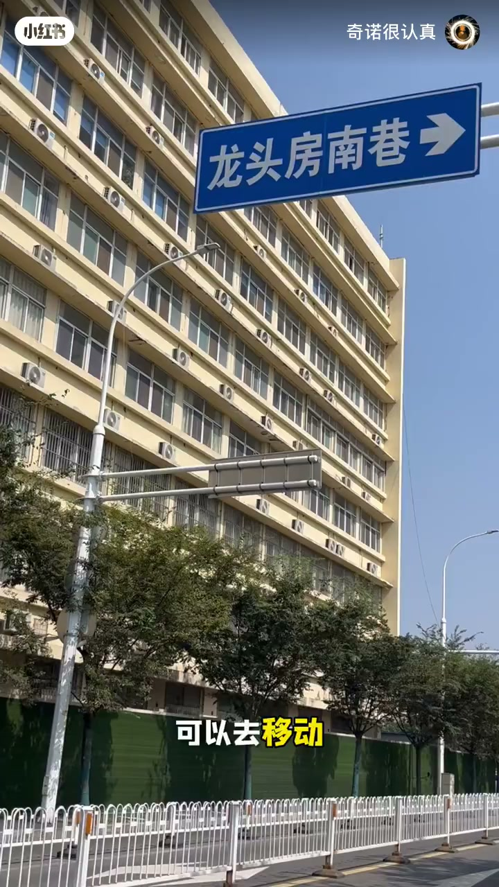
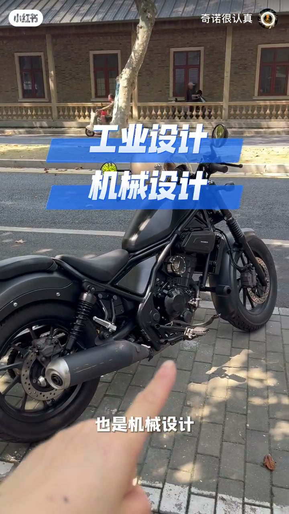
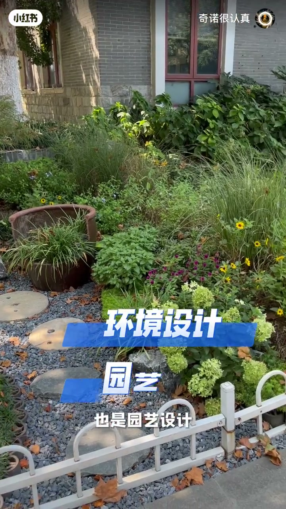
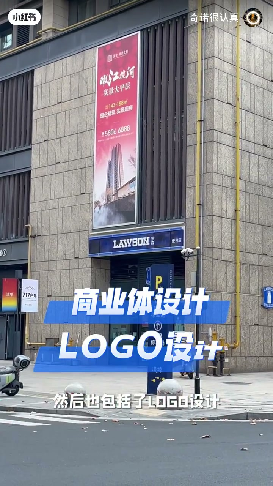

内容要点
作者从可滑动的巷道路牌固定件切入：设计不是「高大上概念」，而是街边机械、工业产品、园艺环境、商业体与 LOGO，甚至人际行为里都藏着设计能力。Whisper 几乎只有开场一句，主体靠画面字幕与分类贴片完成。
知识结构
[00:00→00:20]
滑动路牌
路牌背后轨道可移动，安装容错与维护便利藏在结构里。
[00:20→00:45]
破除高大上
设计被误当成玄概念；作者拉回日常可见物。
[00:45→01:00]
分类举例
摩托=工业/机械；绿化=环境/园艺；商业楼=商业体+LOGO。
[01:00→01:26]
行为也是设计
求人办事等行为描述也取决于「设计能力」；很多细节常被忽略。
总结
先看见约束下的解法（可滑动固定），再把「设计」从职业头衔还原为分类能力：物、环境、商业符号，以及把事情办成的行为设计。
00:00-00:45从可滑动路牌说起
开场特写巷道路牌背后的金属轨道：不论牌子当初怎么装，后面都可以移动调整。这是一个很小却很完整的机械设计——把安装误差与后期维护写进结构。
作者转向镜头，指出很多人把设计想成「高大上概念」，而真正的设计往往藏在这种不起眼的固定件里。

[00:07] 特写路牌背后可滑动的金属固定轨道
Close-up of the sliding metal track fixing a street sign from behind.

[00:13] 龙头房南巷路牌可左右移动，体现机械设计
The Longtoufang South Lane sign can slide—an everyday mechanical design detail.
00:45-01:26街头分类：工业、环境、商业与行为
画面快速贴标签：路边摩托车同时是工业设计与机械设计；街边绿化与围栏是环境设计/园艺；商业楼与便利店门头则是商业体设计加 LOGO 设计。
结尾把设计拉回人际：求人办事也是一种行为描述，效果取决于「设计师」（办事人）的能力；提醒观众很多时候会忽略这些隐藏细节。

[00:40] 路边摩托车：工业设计与机械设计示例
A roadside motorcycle as an example of industrial and mechanical design.

[00:46] 街边绿化与围栏：环境设计与园艺
Street greenery and fencing as environmental and garden design.

[00:53] 商业楼与便利店门头：商业体与 LOGO 设计
A commercial building and convenience-store front as commercial and logo design.
完整转录（1段）
以下文本由 Whisper medium 模型自动转录，可能存在少量识别误差，已尽可能修正。
前两天我拍了个路牌